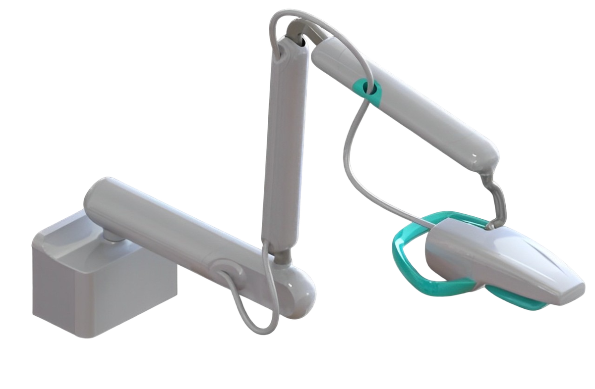
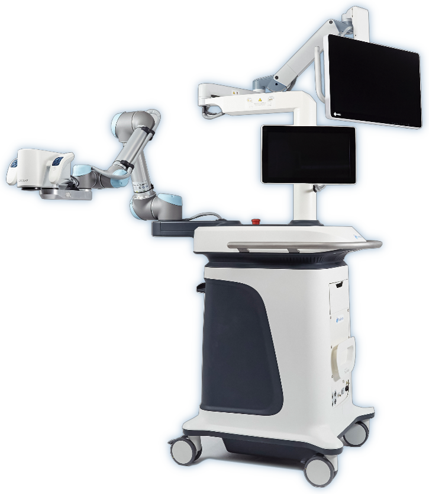
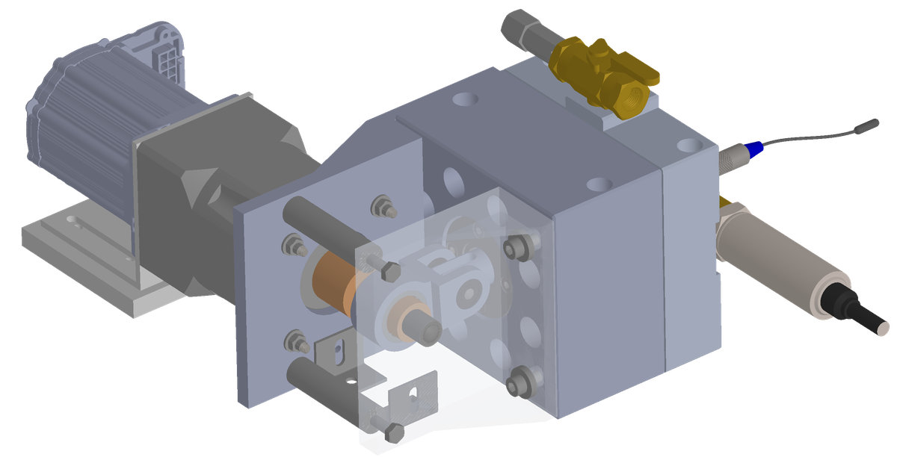
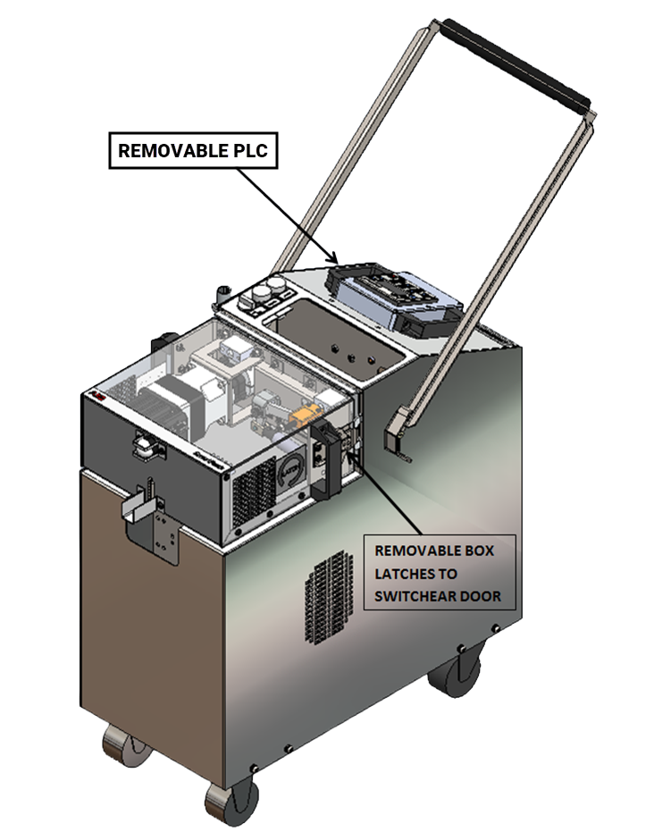
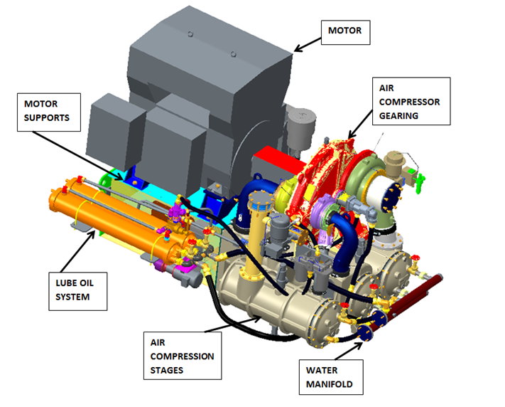
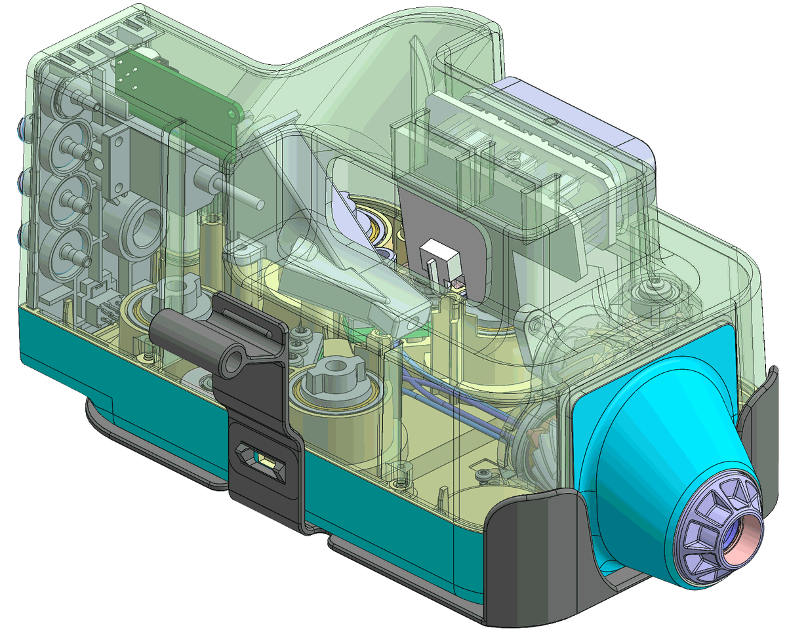

About
I'm a tinkerer at heart — raised in my dad's shop and running a handyman LLC by high school. That hands-on instinct still drives how I work: I treat design for manufacturing as paramount, because a design is only as good as the process that can produce it.
I've led teams to deliver groundbreaking hardware — a 3D x-ray positioning system, a robotic neurosurgical microscope, a pump-to-catheter device for arterial calcified lesions, and a remotely operated racking device for medium-voltage circuit breakers. Across medical, power, automation, and consumer products, I balance creativity with the practical realities of FDA, IEC 60601, ISO 13485, and ANSI/ISO compliance.
When I'm not at the bench, you'll find me with my 3D printers, hiking the California hills, writing and producing music, or chasing the next stand-up open mic.
Featured Work
Selected projects from 15 years of design engineering. Click any card to jump to its page in the design portfolio.

3D Dental X-Ray Positioning System
Sole mechanical design engineer for a multi-DOF positioning arm delivering CT-quality imaging (later adapted for tomosynthesis). Designed a tuned die-spring suspension and built a force-balance calculator to keep the arm static at any angle without a brake.

Surgical 3D Robotic Microscope
Designed mechanical subsystems for a robotic neurosurgical microscope. Ran static FEA on the assembled frame (including fasteners) and modal analysis on the cantilevered display arm to verify safety factors per IEC 60601. Co-authored the 510(k) submission.

Diaphragm Pump Catheter Device
Proof of concept through prototype for a balloon catheter that pulsates to remove intravascular calcified lesions. ~1 Nm of torque drives 5.5 kN of chamber force via servo-controlled diaphragm pump. Designed, machined (CAM + CNC), molded, and tested end-to-end.

Remote Switchgear Racking Device
Electric remote racking device that keeps technicians out of arc-flash range while racking medium-voltage circuit breakers. Sub-2-minute connect-to-disconnect cycle, < 45 lb lift, < $3K BOM. Design, PLC programming, prototype, supplier work, and manufacturing handoff.

Centrifugal Air Compressor — Dual Oil Cooler
Designed a dual-cooler system for 5,000 cfm centrifugal air compressors so the machine keeps running during cooler service. Identified coolers, valves, and hardware; laid out the full compressor model; designed tubing, brackets, and integrated the lube-oil pumps and water manifold.

Robotic Endoscope — Injection-Molded Parts
Sterilized plastic parts in a pulley-driven push-pull cable system for a surgical robotic endoscope. Took the 3D-printed prototype geometry and redesigned it for injection molding alongside industrial design direction. Worked with an overseas contract manufacturer to ensure moldability and quality.
Documents
Everything in one place — résumé, full portfolio, manufacturing experience, career timeline, and a longer-form bio.
Resume
One-page summary of roles, accomplishments, and technical skills across Nevados, Swope, True Digital Surgery, Surround Medical, ABB, Ingersoll Rand, Sandvik, and Newell.
Open PDFDesign Portfolio
Sixteen project case studies — summaries, requirements, my role, and visuals. Spans medical devices, industrial power, automation, and personal maker work.
Open PDFManufacturing Experience
Catalog of manufacturing processes I've personally performed, designed for, or witnessed in production — CNC, injection molding, sheet metal, 3D printing (FDM/SLA/SLS/DMLS), welding, EDM, and more.
Open PDFCareer Timeline
Context for each role and transition — what I worked on, why I moved, and what I took away. Useful background for anyone reviewing my work history.
Open PDFAbout Me — Longer Form
The non-résumé version: how I got into engineering, what drives me, the industries I've worked across, life in California, and the side projects (3D printing, music, comedy, and the occasional coffee roaster) that keep me building outside of work.
Open PDFTechnical Skills
CAD & Modeling
- SOLIDWORKS 16 yrs
- Creo Parametric / Pro/E
- NX, Inventor, Onshape, Fusion
- SOLIDWORKS PDM, Arena, Windchill
Analysis
- FEA — SOLIDWORKS Simulation 9 yrs
- Thermal & Flow Simulation
- Modal analysis
- FMEA / DFMEA
- GD&T — ASME Y14.5
Design for Manufacturing
- DFM / DFA / DFx 15 yrs
- Injection molding (incl. tooling)
- Sheet metal — bending, stamping, roll-forming
- Die & investment casting
- CAM — HSMWorks, NX
Prototyping & Hands-on
- CNC milling, turning, grinding (program & run)
- Manual mill / lathe, welding
- 3D printing — FDM, SLA, SLS, DMLS
- Silicone molding, wire EDM
- CMM & inspection
Regulatory & Standards
- FDA — 510(k) co-author
- IEC 60601
- ISO 13485
- ANSI, ASME, UL
Leadership & PM
- Cross-functional team leadership
- Mentoring junior engineers
- Vendor management (domestic & overseas CMs)
- Jira, Confluence, Agile
Get in touch
Best reached by email or LinkedIn. Happy to talk shop about mechanism design, medical-device development, DFM trade-offs, or anything in the portfolio.